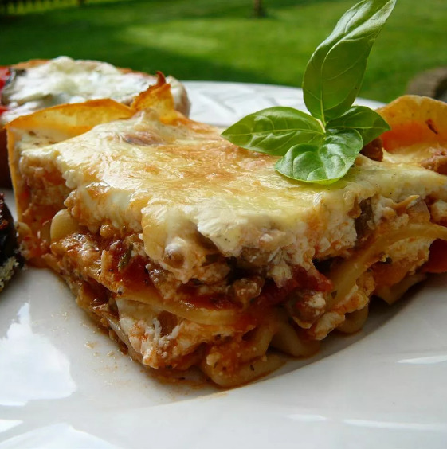

Lasagna

Description
This is my grandma's best lasagna recipe, except I use sour cream instead of
ricotta (a trick I picked up from my mother-in-law). She always made it for
birthdays and special occasions. This makes a large amount, so I halve it when
making it for my boyfriend and myself.
It's very cheesy, so sometimes I add a little extra tomato sauce.
Ingredients
- ½ pound ground pork sausage
- ½ pound ground beef
- ½1 clove garlic, minced
- 1 (28 ounce) can diced tomatoes
- 1 (8 ounce) can tomato sauce
- 1 tablespoon dried parsley
- ½ teaspoon dried basil
- ½ teaspoon dried oregano
- 1 pinch white sugar
- 1 (8 ounce) package lasagna noodles
- 1 (16 ounce) container sour cream
- 2 (12 ounce) packages shredded mozzarella cheese, divided
- ¾ cup grated Parmesan cheese
- ½ cup chopped pitted green olives
- 3 large eggs, lightly beaten
- 2 teaspoons salt
- ¼ teaspoon ground black pepper